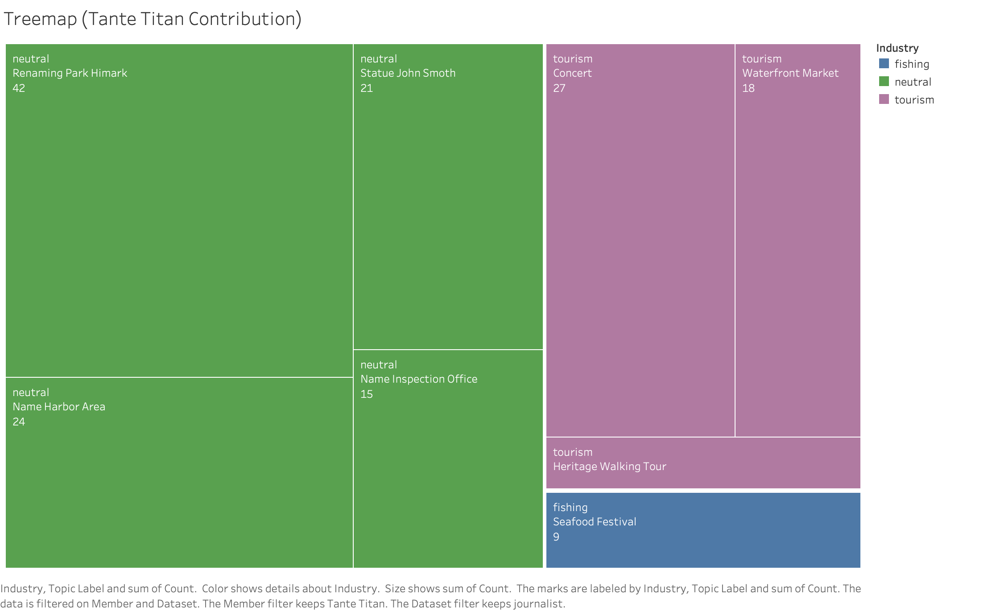

Finding 4: Distortion From Omitted Members, Not Fabricated Data
Member deep-dive; Tante Titan exclusion; FILAH and TROUT sampling bias
Summary
The lobbies did not fabricate records. The distortion in their datasets comes entirely from selective omission — choosing which members and which discussions to include. The pivotal case is Tante Titan: the committee’s most active member, a strong tourism voice, and the one member excluded from both lobby datasets entirely.
Tante Titan’s record (journalist): 54 total participations — fishing: 3, tourism: 17, neutral: 34 TROUT excluded: Tante Titan (54 records), Carol Limpet (21), Simone Kat (45) — committee appears fishing-leaning in TROUT’s data (fishing=38.9%, tourism=31.5%) FILAH excluded: Tante Titan (54 records), Ed Helpsford (20), Teddy Goldstein (22) — committee appears tourism-leaning in FILAH’s data (tourism=43.6%, fishing=39.7%)
Dashboard 4 — Member Overview
This dashboard provides an overview of all six members’ profiles and includes an interactive Person-Picker filter: clicking any member in the influence bubble filters all other charts on this dashboard to that member’s records simultaneously.
Member Influence Bubble

Bubble chart — each bubble represents one COOTEFOO member. X-axis: bias score; Y-axis: total participations. Bubble size encodes total records. Colour encodes bias direction.
The influence bubble provides an overview of all six members’ profiles at a glance:
| Member | Bias Direction | Total Participations | Note |
|---|---|---|---|
| Tante Titan | Tourism-leaning | 54 (highest) | Excluded from both lobbies |
| Simone Kat | Balanced | 45 | Most active after Tante Titan |
| Teddy Goldstein | Fishing-leaning | 22 | Most polarised fishing voice (−0.32); excluded from FILAH |
| Carol Limpet | Tourism-leaning | 21 | Excluded from TROUT |
| Ed Helpsford | Tourism-leaning | 20 | Excluded from FILAH |
| Seal | Fishing-leaning | 12 (lowest) | Present in both lobby datasets |
Clicking a member in this chart filters all other charts on the dashboard to that member’s records.
Meeting Attendance Heatmap

Attendance heatmap — member (rows) × meeting (columns).
The heatmap shows which members attended which of the 16 committee meetings. Comparing across dataset filters reveals how the lobbies’ selective coverage omits attendance records for their excluded members entirely.
Member Activity Over Time

Line chart — member participation count across meetings 1–16. Each line represents one member. Tante Titan’s consistently high participation is annotated.
Tante Titan did not just attend more meetings — she was consistently the most active participant across all 16 sessions. Her exclusion removes the single most impactful member from both lobby records.
Dashboard 4.1 — The Omission Case: FILAH and TROUT
A Member Filter on this dashboard allows switching between any COOTEFOO member. The Records FILAH Withheld chart, Records TROUT Withheld chart, and Member Topic Profile treemap all update to reflect the selected member. The Member Impact Bar is fixed and shows the overall committee-level effect of all exclusions combined.
Member Impact Bar

Industry share comparison — committee-level industry balance with and without the excluded members. Shows how the lobbies’ omissions shift the apparent committee balance.
Both lobbies excluded members whose records would have undermined their narrative. FILAH excluded Tante Titan, Ed Helpsford, and Teddy Goldstein — critically, Goldstein is the committee’s strongest fishing voice (−0.32), so removing him makes the committee appear more tourism-leaning in FILAH’s data (tourism=43.6%, fishing=39.7%), supporting FILAH’s claim that the committee is pro-tourism. TROUT excluded Tante Titan, Carol Limpet, and Simone Kat — removing all strong tourism voices — making the committee appear fishing-leaning in TROUT’s data (fishing=38.9%, tourism=31.5%), supporting TROUT’s claim that the committee is pro-fishing. The impact bar quantifies exactly how much the committee’s apparent balance shifts when these excluded members are restored.
Records FILAH Withheld

Withheld records bar chart — count of records FILAH withheld for the selected member, broken down by topic. Formula: journalist count − FILAH count per topic. Responds to the Member Filter.
FILAH’s exclusions were wholesale — entire members were removed, not individual topics. The withheld records span all industry categories, confirming that FILAH did not selectively filter by topic type. Switching members reveals which individuals were most impacted by FILAH’s editorial choices.
Records TROUT Withheld

Withheld records bar chart — count of records TROUT withheld for the selected member, broken down by topic. Formula: journalist count − TROUT count per topic. Responds to the Member Filter.
With Tante Titan selected, TROUT withheld 54 records across 8 topics spanning fishing, tourism, and neutral categories — a total, wholesale exclusion. TROUT also excluded Carol Limpet (21 records) and Simone Kat (45 records). Switching members shows the full scale of TROUT’s omissions across all three excluded members.
Member Topic Profile — Treemap

Treemap — selected member’s topic participation from the journalist’s full record. Tile size encodes participation count per topic; colour encodes industry (fishing = blue, tourism = purple, neutral = green). Always uses the Journalist dataset. Responds to the Member Filter.
The treemap updates to show whichever member is selected, revealing each member’s true topic profile from the complete record. With Tante Titan selected, the largest tiles are tourism-related — showing precisely what both lobbies chose to hide. Switching members allows direct comparison of topic profiles across the full committee.
Key Takeaway
Neither FILAH nor TROUT fabricated records. Their bias comes from selecting which records to include. The most egregious case is Tante Titan: 54 records, most active member, strongest tourism voice, excluded from both datasets entirely. Restoring her records to either lobby’s dataset reverses the apparent bias direction.
The distortion is structural. The mechanism is omission. The evidence is clear.